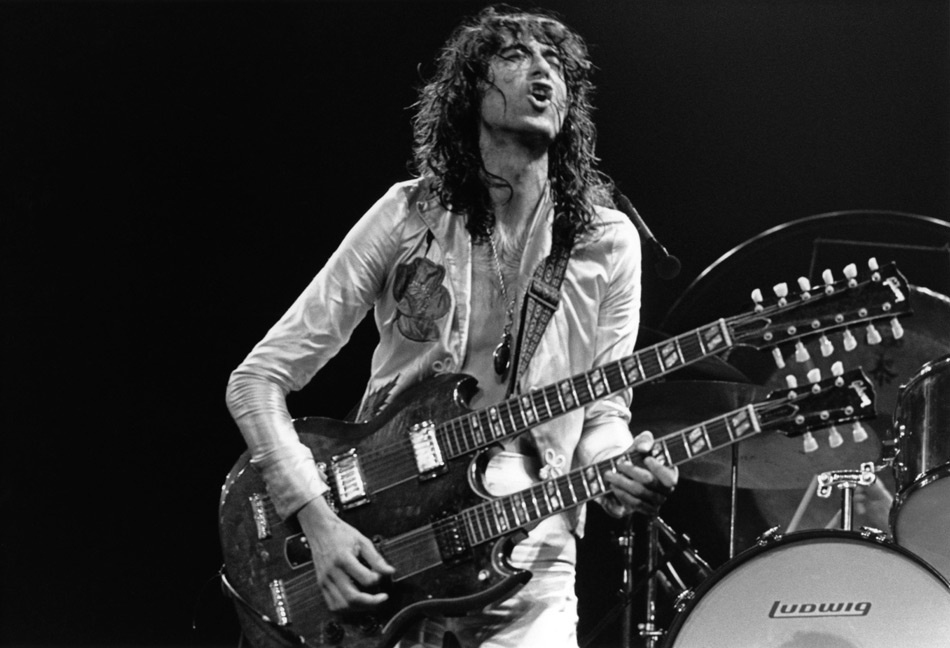
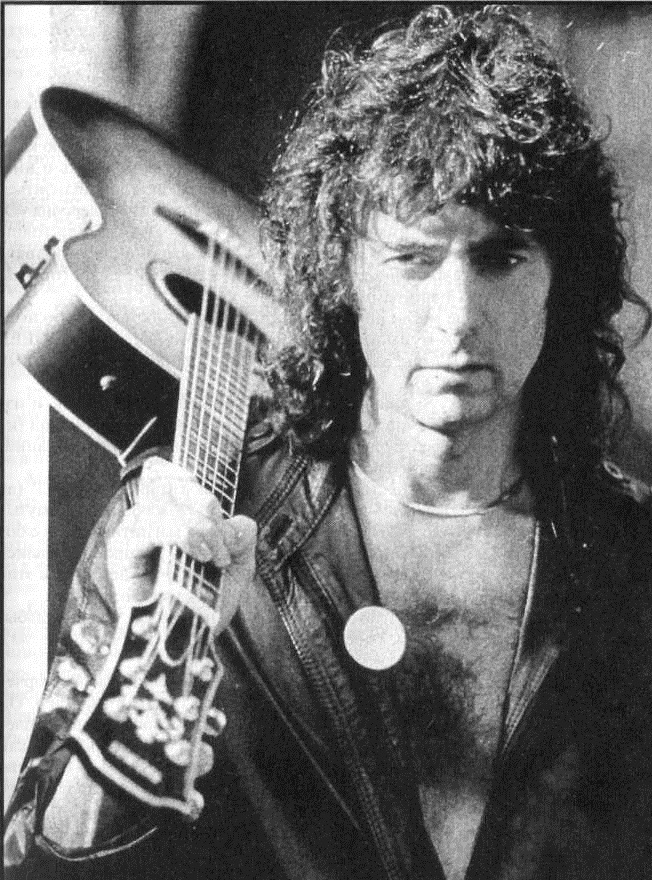
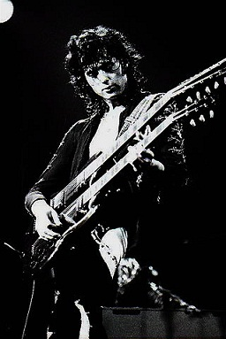

Джимми Пейдж (англ. Jimmy Page, полное имя Джеймс Патрик Пейдж, англ. James Patrick Page; 9 января 1944, Хестон, Лондон) — британский рок-музыкант, аранжировщик, композитор, музыкальный продюсер и гитарист-виртуоз, стоявший у истоков Led Zeppelin и до самого конца оставался музыкальным «мозгом» группы. До этого был известен как сессионный гитарист и участник The Yardbirds (c конца 1966 до 1968 года).
Джеймс Патрик Пейдж родился 9 января 1944 года в Хестоне, западном пригороде Лондона, в семье менеджера и секретарши доктора. В 1952 году семья переехала на Майлз-роуд в Эпсоме. Пейдж пошёл в школу в пять лет; до этого у него не было друзей-сверстников.
В 12 лет Пейдж впервые взял в руки гитару: старую испанскую акустику, найденную им на чердаке своего дома. Поначалу инструмент не заинтересовал мальчика; захотел научиться играть на нём он, когда услышал «Baby, Let’s Play House» Элвиса Пресли. «Парень в школе показал мне аккорды и — пошло-поехало», — вспоминал Пейдж.
Получив первые уроки игры в музыкальной школе (в Кингстоне), он приступил затем к усиленному самообразованию. Первыми гитаристами, оказавшими влияние на его стиль игры, были Скотти Мур и Джеймс Бертон (игравшие с Элвисом Пресли). «Baby Let’s Play House» была одной из любимых вещей юного Пейджа. Постепенно вокруг одарённого гитариста стало собираться настоящее музыкальное общество, члены которого впоследствии стали, как и он сам, легендами (Эрик Клэптон, Джефф Бек).
На 14-летие родители подарили Джеймсу первую электрогитару, чехословацкую Jolana Grazioso, дешевую копию гитары «Fender Stratocaster». Пейдж занимался на ней круглыми сутками, даже в школе. Однако там не оценили стремления юного Джимми к музыке и гитару конфисковывали до конца каждого учебного дня.
К этому же времени относятся и его первые успехи: так, он выступил на Би-би-си, сыграв со своей (очевидно, безымянной) группой каверы некоторых кантри- и скиффл-песен. В 1959—1960 годах Пейдж достаточно окреп музыкально для того, чтобы отправиться на первые гастроли, и был приглашён в группу Neil Christian & The Crusaders. Покинув ансамбль по состоянию здоровья, Пейдж поступил в художественный колледж, но занятий музыкой не прекратил. В начале 1960-х годов, бросив учёбу, начал карьеру сессионного музыканта, накапливая опыт и оттачивая техническое мастерство.
Джимми очень восхищался первым альбомом Берта Дженша (Bert Jansch, 1965), сказав : "В какой то момент я был совершенно захвачен Дженшем Бертом. Когда я впервые услышал его диск, я не мог поверить этому. Это было намного впереди того, что кто-либо делал. Никто в Америке не мог дотянуться до этого "
Пейдж был сессионным музыкантом в группе Дэвида Боуи. В числе групп, с которыми он записывался, были The Kinks и The Yardbirds.
Все идеи, которые не удалось реализовать в Yardbirds, Пейдж перенёс в Led Zeppelin, собственными усилиями создав уникальный стиль группы, в котором каждый из участников сумел реализовать свои самые сильные качества. Практически каждый трек первых четырёх альбомов группы считается гитарной классикой. Джонни Рамон говорил, что свой стиль выстроил на основе одного риффа — «Communication Breakdown». То же значение для Эдди Ван Халена (по его собственному признанию) имел «Heartbreaker» из второго альбома. Гитарное соло Пейджа в «Stairway to Heaven» возглавило списки лучших гитарных соло журналов Guitar World и Total Guitar. Журнал Creem признавал его лучшим гитаристом мира в течение пяти лет подряд.
Постоянно экспериментируя со звуком, Пейдж-продюсер сделал в студии несколько открытий и использовал многие эффекты впервые в истории.
В процессе работы над первым альбомом Пейдж использовал 1958 Telecaster и 10-струнную педал-стил-гитару Fender 800. Начиная со второго альбома и далее его основным инструментом стал Gibson Les Paul с набором усилителей Marshall. Позднее он не раз возвращался к Фендеру — в частности, на нём исполнил соло в «Stairway to Heaven». Для партий слайд-гитары Пейдж использовал Danelectro DC-59. В числе эффектов, использовавшихся им в студии, были Vox AC30, фуззбокс Sola Sound Tone Bender Professional MKII («How Many More Times»), терменвоксом и педаль wah-wah (с последней он обращался не так, как это делали Джими Хендрикс и современники, а по-своему: каждый раз вжимая её в дальнее положение для получения более заострённого звука).
Сенсацию произвела использованная Пейджем в «Dazed and Confused» и «How Many More Times» техника смычковой игры на гитаре, которой он овладел в бытность свою сессионщиком. До Пейджа так играл Эдди Филипс, гитарист The Creation, но гитарист Led Zeppelin (в MTV Rockumentary) рассказал о том, что перенял эту технику у другого сессионного музыканта, Дэвида Маккаллума-старшего. Игра Пейджа смычком в «Dazed and Confused» была усилена эхом: для этой цели он использовал реверб EMT — записанный эффект отделил на отдельную дорожку и ввёл затем в микс, создав эхо-эффект.[13] Пейдж говорил (в интервью Guitar World 1993 года), что сознательно менял звукоинженеров для работы с альбомами группы (Глин Джонс, Эдди Креймер, Энди Джонс и др.), чтобы у тех не появилось повода позже заявить, что это они создали звучание группы.
Джимми Пейдж всегда носил с собой портативный кассетный магнитофон, на который записывал появлявшиеся идеи: именно благодаря привычке гитариста группы прослушивать старые риффы и формировать из них новые сочетания в репертуаре Led Zeppelin появились такие вещи, как «The Song Remains The Same» и «Stairway to Heaven».
Одной из самых своих «плотных» продюсерских работ Пейдж называл альбом Houses of the Holy; напротив, Physical Graffiti был в этом смысле почти импровизированным: Пейдж принял сознательное решение отказаться от излишне «полированного» звука. Здесь появились спонтанные записи, например, песня «In My Time of Dying». Пейдж говорил, что это — самый личный альбом группы, словно бы приглашавший слушателя во внутренний мир музыкантов.
Во многом определяющей для звучания поздних Led Zeppelin явилась идея посетить Марокко. Она возникла у Пейджа после продолжительной дискуссии с Уильямом Берроузом в редакции журнала Crawdaddy — в частности, той её части, где речь шла о гипнотической стороне рока и параллелях его с арабской культурой.
Приведя в качестве примера такой связи цеппелиновскую «Black Mountain Side», Берроуз и посоветовал гитаристу группы отправиться в Марокко и исследовать музыкальную культуру страны непосредственно
В начале 1970-х годов Джимми Пейдж приобрёл в Лондоне магазин-издательство оккультной литературы «The Equinox Booksellers and Publishers», располагавшийся на Кенсингтон-Хай-стрит. О том, что владелец всерьёз относился к собственной миссии, свидетельствует хотя бы тот факт, что факсимильное издание «The Goetia» Алистера Кроули было перевыпущено здесь в суперобложке из верблюжьей кожи, повторявшей обложку оригинала.Появление 4 символов на обложке четвёртого альбома Led Zeppelin также связывалось с оккультными устремлениями гитариста группы. Принято считать, что каждый знак символизирует одного из участников группы. В ходе гастролей после выхода альбома Led Zeppelin IV Пейдж стал появляться на сцене в так называемом «костюме Дракона», на котором были изображены зодиакальные знаки (Козерог, Скорпион и Рак) наряду с его персональным символом «ZoSo». Смысл последнего остаётся неясным, хоть и известно, что Пейдж заимствовал его из книги «Ars Magica Arteficii» (1557) алхимика Дж. Кардана, трактовавшего это изображение как зодиакальный коллаж. Но есть мнение (отражённое, в частности, в словаре «Dictionary of Occult, Hermetic and Alchemical Sigils» Фреда Геттингса, 1982), что это стилизация «666», использованная Алистером Кроули в «Эквиноксе».
С увлечением Пейджа оккультизмом многие связывают оформление обложки Led Zeppelin IV, в основу которого легла репродукция картины Баррингтона Колби, созданной по мотивам образов карты Таро «Отшельник». (Характерно, что именно в этот образ Пейдж трансформируется в одном из фрагментов фильма «The Song Remains the Same».) Источником кривотолков явилась и эмблема Swan Song Records (лейбла, запущенного Led Zeppelin 10 мая 1974 года), образ которой повторял сюжет картины «Evening: Fall of Day» (1869) художника Вильяма Риммера, изображавшей Аполлона, бога света и разума (в других трактовках — Икара, а также Люцифера).
В ходе слушаний, проводившихся в 1980-х годах организацией PMRC (Parents Music Resource Center), созданной Типпер Гор, всплыли на поверхность и давние обвинения в адрес «Stairway to Heaven», текст которой якобы содержит изнаночные сатанинские послания (так называемые «backwards masking») — в куплете, начинающемся со слов: If there’s a bustle in your hedgerow… К однозначному выводу инициаторы дискуссии так и не пришли.
Скандалом закончилось сотрудничество Пейджа с кинорежиссёром (и другим почитателем Кроули) Кеннетом Энгером, заказавшим ему звуковую дорожку к своему фильму «Lucifer Rising». Тот факт, что вместо полноформатного саундтрека Пейдж произвёл на свет за три года работы лишь «23 минуты электронного гула» (музыка создавалась на гитаре, пропущенной через синтезатор) возмутил Энгера, и тот обрушился на гитариста с многочисленными упрёками. Помимо всего прочего, он обвинил Пейджа в том, что тот профанирует сатанизм и слишком предпочитает Люциферу «белую леди» (кокаин). Пейдж выступил с опровержениями, указав, в частности, что позволял Энгеру снимать фрагмент фильма в подвале своего лондонского дома Тауэр-хаус. Это неоконченное произведение Джимми Пейджа было выпущено компанией Boleskine House Records 19 июня 1987 года на синем виниле. Принято считать, что инструментальное вступление к треку «In the Evening» впоследствии перешло в песню именно отсюда.
При том, что Пейдж был страстным коллекционером книг Кроули, он никогда не называл себя телемитом, не являлся участником O.T.O. и дистанцировался от оккультизма. Книжный магазин «The Equinox», как и особняк Болскин-хаус, были проданы в 1980-х годах, после того как Пейдж обзавёлся прочной семьёй и посвятил себя благотворительной деятельности.
Начиная с 1990 года Пейдж активно занимался ремастерингом бэк-каталога Led Zeppelin, время от времени появляясь в благотворительных концертах, в частности, в поддержку Children Trust — фонда, основанного его женой Хименой Гомес-Паратча.
В 1998 году Пейдж исполнил гитарную партию в треке Паффа Дэдди «Come with Me» (здесь же был использован семпл «Kashmir»), включённом затем в саундтрек блокбастера «Godzilla». Позже оба появились с этой песней в программе Saturday Night Live.
В 1999 году Пейдж приступил к сотрудничеству с The Black Crowes, записав с группой концертный двойной альбом. В 2001 году Пейдж с участниками Limp Bizkit и Puddle of Mudd на церемонии вручения MTV Europe Video Music Awards во Франкфурте исполнили версию «Thank You».
В 2005 году Джимми Пейдж был награждён Орденом Британской Империи (в качестве признания его благотворительной деятельности в Бразилии), а также стал почётным гражданином Рио-де-Жанейро. В том же году он получил «Грэмми». В ноябре 2006 года Led Zeppelin были введены в UK Music Hall of Fame, в ходе церемонии Пейдж произнёс краткую благодарственную речь, транслировавшуюся по телевидению, после чего австралийская группа Wolfmother исполнила в качестве трибьюта «Communication Breakdown».
10 декабря 2007 года трое участников Led Zeppelin вместе с сыном барабанщика Led Zeppelin Джейсоном Бонэмом выступили на лондонской арене O2: концерт получил восторженные отклики и явился причиной многочисленных домыслов о возрождении Led Zeppelin.
20 июня 2008 года Пейдж получил почётную докторскую степень Университета графства Суррей — за свои заслуги перед музыкальной индустрией.
На церемонии закрытия Олимпийских игр 2008 года Джимми Пейдж, Дэвид Бекхэм и Леона Льюис представляли Великобританию: Бекхэм въехал на стадион в даблдекере, Пейдж и Льюис исполнили «Whole Lotta Love».
В 2012 году, Джимми Пейдж вместе с Робертом Плантом и Джоном Пол Джонсом приняли участие в пресс-конференции в Нью Йорке, на которой был объявлен выпуск live-альбома с выступления Led Zeppelin на О2 Arena 10 декабря 2007 года.
В 2014 году Пейдж активно занялся переизданием всей дискографии Led Zeppelin. В июне 2014 состоялся выход ремастированных версий Led Zeppelin I, II и III. В конце октября того же года были переизданы четвертый и пятый альбомы группы, IV и Houses of the Holy. Выход Physical Graffiti намечен на 24 февраля 2015, остальных — Presence, In Through the Out Door и Coda — на конец мая 2015 года.
В 2015 году, согласно официальным заявлениям, Джимми Пейдж планирует проведение мирового турне вместе с гитаристом и вокалистом Soundgarden Крисом Корнеллом.